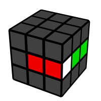
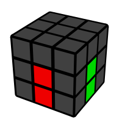

Cross Tutorial
Learn to solve the cross — the first step of CFOP. From basic edge insertion to solving two at once, and finally XCross.
The 4 Edges, On Bottom
The cross uses the 4 white edges. Always solve on D (bottom), never on top — this leaves U free for F2L lookahead. Each edge must match both the D center and its side center.
Solving the Last Edge
The first 3 edges are intuitive. The last one is often flipped. If the edge is in the top layer but flipped: F U' R U flips it in place. If it's stuck flipped in the slot: do F2 to take it out to the top, then solve normally. Learn these two — they cover 90% of last-edge cases.

Order Matters
The 4 edges must be in the correct relative order around D. White-Green must be next to White-Orange (not White-Red). Check the side colors against the centers BEFORE you finish — a cross with wrong order is useless and you have to redo it. During inspection, memorize the order: e.g. 'Green-Orange-Blue-Red' clockwise.

Intermediate: Solve Two at Once
Instead of solving edges one by one, pair them up. While bringing one edge to the top, notice where a second edge is — you can often position both with one U move, then drop them together. This halves your cross move count. Practice by trying to solve the cross in 2 pairs instead of 4 singles.
ADF: Use D Moves, Not F2
Beginners do F2 (or R2/L2/B2) to drop each edge. Better: keep the edge on top, use D moves to align the D layer, then drop with a single F2 at the end. Even better: solve the relative order FIRST with D moves, then place all 4 with minimal top-layer moves. This is called ADF (Adjust D Face) — you adjust D instead of solving one by one.
Advanced: XCross
XCross (Extended Cross) solves the cross AND the first F2L pair together. During inspection, if you see an easy F2L pair that forms naturally while doing cross, plan it in. Start by just noticing — don't force it. When you can do XCross on easy cases, your solve flows straight from inspection into F2L with zero pause. This is the bridge to predicting the first pair (see Roadmap).
Cross 教程
学习复原 Cross——CFOP 的第一步。从基础棱块插入，到一次做两条棱，最后到 XCross。
4 条棱，在底面做
Cross 用 4 条白色棱。永远在 D 面（底面）做，不要在顶面——这样 U 层留给 F2L 观察。每条棱要同时对准 D 中心和侧面中心。
最后一棱的公式
前 3 条棱很直观，最后一棱经常是翻色的。如果棱在顶层但是翻的：F U' R U 原地翻色。如果卡在槽里翻着：先 F2 把它拿出来，再正常做。学会这两个——覆盖 90% 的情况。
顺序很重要
4 条棱在 D 面的相对顺序必须正确。白绿旁边必须是白橙（不是白红）。做完之前先对照侧面中心检查——顺序错的 cross 等于白做，得重来。观察时记住顺序，比如顺时针'绿-橙-蓝-红'。
进阶：一次做两条
不要一条一条做，试着两条一起做。把一条棱带到顶层的同时，注意第二条棱在哪——经常可以用一次 U 转把两条都摆好，然后一起放下去。这样 cross 步数减半。练习时试着用 2 组而不是 4 次单个来完成 cross。
ADF：用 D 转代替 F2
新手每条棱都用 F2（或 R2/L2/B2）放下去。更好的方法：棱留在顶层，用 D 转调整 D 层对齐，最后一下 F2 放下去。更进一步：先用 D 转把相对顺序摆好，再用最少的顶层步数放下 4 条。这叫 ADF（Adjust D Face）——用 D 调整代替一条一条做。
高级：XCross
XCross（Extended Cross）是 cross 和第一组 F2L 一起做。观察时如果看到一组简单的 F2L 在做 cross 时会自然形成，就把它规划进去。先从'注意到'开始，不要硬做。当你能在简单 case 做 XCross 时，你的复原就从观察直接流进 F2L，零停顿。这是通向预判第一组 F2L 的桥梁（见进阶路线图）。
Cross 教程
學習復原 Cross——CFOP 的第一步。從基礎棱塊插入，到一次做兩條棱，最後到 XCross。
4 條棱，在底面做
Cross 用 4 條白色棱。永遠在 D 面（底面）做，不要在頂面——這樣 U 層留給 F2L 觀察。每條棱要同時對準 D 中心和側面中心。
最後一棱的公式
前 3 條棱很直觀，最後一棱經常是翻色的。如果棱在頂層但是翻的：F U' R U 原地翻色。如果卡在槽裡翻著：先 F2 把它拿出來，再正常做。學會這兩個——覆蓋 90% 的情況。
順序很重要
4 條棱在 D 面的相對順序必須正確。白綠旁邊必須是白橙（不是白紅）。做完之前先對照側面中心檢查——順序錯的 cross 等於白做，得重來。觀察時記住順序，比如順時針'綠-橙-藍-紅'。
進階：一次做兩條
不要一條一條做，試著兩條一起做。把一條棱帶到頂層的同時，注意第二條棱在哪——經常用一次 U 轉把兩條都擺好，然後一起放下去。這樣 cross 步數減半。練習時試著用 2 組而不是 4 次單個來完成 cross。
ADF：用 D 轉代替 F2
新手每條棱都用 F2（或 R2/L2/B2）放下去。更好的方法：棱留在頂層，用 D 轉調整 D 層對齊，最後一下 F2 放下去。更進一步：先用 D 轉把相對順序擺好，再用最少的頂層步數放下 4 條。這叫 ADF（Adjust D Face）——用 D 調整代替一條一條做。
高級：XCross
XCross（Extended Cross）是 cross 和第一組 F2L 一起做。觀察時如果看到一組簡單的 F2L 在做 cross 時會自然形成，就把它規劃進去。先從'注意到'開始，不要硬做。當你能在簡單 case 做 XCross 時，你的復原就從觀察直接流進 F2L，零停頓。這是通向預判第一組 F2L 的橋樑（見進階路線圖）。
クロスチュートリアル
CFOPの最初のステップ、クロスを学ぶ。基本のエッジ入れから、2つ同時、そしてXCrossまで。
4エッジ、下面で
クロスは白の4エッジ。必ずD面（下面）で揃え、上面では揃えない——U層をF2Lの先読みに使う。各エッジはDセンターと側面センターの両方に合わせる。
最後のエッジ
最初の3エッジは直感的。最後の1つは反転していることが多い。トップにあって反転：F U' R Uでその場で反転。スロットで反転して詰まった：F2でトップに出してから通常通り。2つ覚えれば90%カバー。
順序が重要
D面での4エッジの相対順序が正しくなければならない。白緑の隣は白橙（白赤ではない）。完成前に側面センターと照合——順序が違うクロスは無意味でやり直し。インスペクションで順序を記憶：時計回りに「緑-橙-青-赤」など。
中級：2つ同時
1つずつではなく、ペアで揃える。1つのエッジをトップに上げる際、2つ目の位置にも注意——1回のUで両方配置し、一緒に入れることが多い。これで手数が半分に。4回単発ではなく2ペアでクロスを完成させる練習を。
ADF：F2の代わりにD
初心者は各エッジをF2（またはR2/L2/B2）で入れる。より良い方法：エッジをトップに置いたまま、DでD層を合わせ、最後にF2一発で入れる。さらに：先にDで相対順序を整え、最小のトップ手数で4本入れる。これをADF（Adjust D Face）と呼ぶ——1つずつの代わりにDで調整。
上級：XCross
XCross（Extended Cross）はクロスと最初のF2Lペアを同時に揃える。インスペクションで、クロス中に自然にできる簡単なF2Lペアが見えたら計画に入れる。まず「気づく」ことから——無理はしない。簡単なケースでXCrossができれば、インスペクションからF2Lへノンストップで流れる。ファーストペア予測への橋渡し（ロードマップ参照）。
Cross-Tutorial
Lerne das Cross — den ersten Schritt von CFOP. Vom einfachen Einsetzen bis zu zwei auf einmal, und schließlich XCross.
Die 4 Kanten, unten
Das Cross nutzt die 4 weißen Kanten. Immer auf D (unten) lösen, nie oben — so bleibt U frei für F2L-Lookahead. Jede Kante muss zum D-Center und Seiten-Center passen.
Die letzte Kante
Die ersten 3 Kanten sind intuitiv. Die letzte ist oft geflippt. Kante oben aber geflippt: F U' R U flippt sie an Ort und Stelle. Geflippt im Slot fest: erst F2 zum Rausnehmen, dann normal lösen. Diese zwei decken 90% ab.
Reihenfolge zählt
Die 4 Kanten müssen in der richtigen relativen Reihenfolge um D sein. Weiß-Grün muss neben Weiß-Orange (nicht Weiß-Rot). Prüfe die Seitenfarben gegen die Center BEVOR du fertig bist — ein Cross mit falscher Reihenfolge ist nutzlos. Merke dir die Reihenfolge in der Inspektion.
Mittelstufe: Zwei auf einmal
Statt einzeln, paarweise lösen. Während du eine Kante nach oben bringst, beachte die zweite — oft kannst du beide mit einem U-Zug positionieren und zusammen einsetzen. Das halbiert deine Zugzahl. Übe, das Cross in 2 Paaren statt 4 Einzelnen zu lösen.
ADF: D-Züge statt F2
Anfänger machen F2 (oder R2/L2/B2) pro Kante. Besser: Kante oben lassen, mit D-Zügen die D-Ebene ausrichten, dann einmal F2 am Ende. Noch besser: erst mit D-Zügen die relative Reihenfolge herstellen, dann alle 4 mit minimalen U-Zügen einsetzen. Das heißt ADF (Adjust D Face).
Fortgeschritten: XCross
XCross (Extended Cross) löst Cross UND das erste F2L-Paar zusammen. Wenn du in der Inspektion ein einfaches F2L-Paar siehst, das beim Cross natürlich entsteht, plane es ein. Fang mit Bemerken an — nicht erzwingen. Wenn du XCross bei einfachen Fällen kannst, fließt dein Solve ohne Pause von der Inspektion ins F2L.
Tutoriel Cross
Apprenez le cross — la première étape du CFOP. De l'insertion de base à deux d'un coup, jusqu'au XCross.
Les 4 arêtes, en bas
Le cross utilise les 4 arêtes blanches. Toujours résoudre sur D (bas), jamais en haut — ça laisse U libre pour anticiper les F2L. Chaque arête doit s'aligner avec le centre D et le centre latéral.
La dernière arête
Les 3 premières arêtes sont intuitives. La dernière est souvent retournée. Arête en haut mais retournée : F U' R U la retourne sur place. Coincée retournée dans l'emplacement : d'abord F2 pour la sortir, puis résoudre normalement.
L'ordre compte
Les 4 arêtes doivent être dans le bon ordre relatif autour de D. Blanc-Vert doit être à côté de Blanc-Orange (pas Blanc-Rouge). Vérifie les couleurs latérales par rapport aux centres AVANT de finir — un cross dans le mauvais ordre est inutile. Mémorise l'ordre pendant l'inspection.
Intermédiaire : deux d'un coup
Au lieu d'une par une, résous-les par paires. En amenant une arête en haut, remarque où est la deuxième — tu peux souvent positionner les deux avec un seul U, puis les insérer ensemble. Ça divise par deux ton nombre de mouvements.
ADF : utiliser D au lieu de F2
Les débutants font F2 (ou R2/L2/B2) par arête. Mieux : garde l'arête en haut, utilise D pour aligner la face D, puis un seul F2 à la fin. Encore mieux : d'abord l'ordre relatif avec D, puis place les 4 avec un minimum de mouvements. C'est l'ADF (Adjust D Face).
Avancé : XCross
Le XCross (Extended Cross) résout le cross ET la première paire F2L ensemble. Pendant l'inspection, si tu vois une paire F2L facile qui se forme naturellement avec le cross, planifie-la. Commence par remarquer — ne force pas. Quand tu maîtrises le XCross sur les cas faciles, ta résolution coule sans pause de l'inspection aux F2L.
Tutorial Cross
Impara la cross — il primo passo del CFOP. Dall'inserimento base a due alla volta, fino all'XCross.
I 4 spigoli, sotto
La cross usa i 4 spigoli bianchi. Risolvi sempre su D (sotto), mai sopra — così U resta libera per anticipare gli F2L. Ogni spigolo deve allinearsi al centro D e al centro laterale.
L'ultimo spigolo
I primi 3 spigoli sono intuitivi. L'ultimo è spesso girato. Spigolo in alto ma girato: F U' R U lo gira sul posto. Bloccato girato nello slot: prima F2 per tirarlo fuori, poi risolvi normalmente.
L'ordine conta
I 4 spigoli devono essere nell'ordine relativo corretto intorno a D. Bianco-Verde deve stare accanto a Bianco-Arancione (non Bianco-Rosso). Controlla i colori laterali rispetto ai centri PRIMA di finire — una cross nell'ordine sbagliato è inutile. Memorizza l'ordine durante l'ispezione.
Intermedio: due alla volta
Invece di uno alla volta, risolvili a coppie. Mentre porti uno spigolo in alto, nota dov'è il secondo — spesso puoi posizionarli entrambi con una sola U, poi inserirli insieme. Dimezza il conteggio delle mosse.
ADF: usa D invece di F2
I principianti fanno F2 (o R2/L2/B2) per spigolo. Meglio: tieni lo spigolo in alto, usa D per allineare lo strato D, poi un solo F2 alla fine. Ancora meglio: prima l'ordine relativo con D, poi inserisci tutti e 4 con mosse minime. Si chiama ADF (Adjust D Face).
Avanzato: XCross
L'XCross (Extended Cross) risolve la cross E la prima coppia F2L insieme. Durante l'ispezione, se vedi una coppia F2L facile che si forma naturalmente con la cross, pianificala. Inizia notando — non forzare. Quando sai fare XCross sui casi facili, la risoluzione fluisce senza pause dall'ispezione agli F2L.